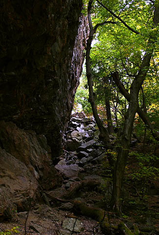
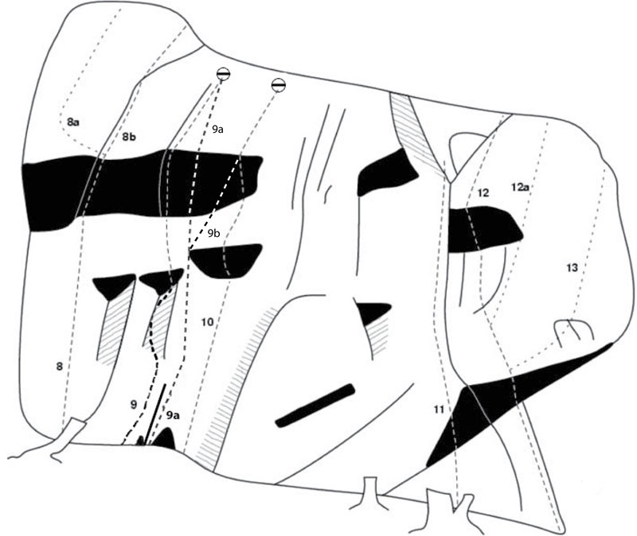
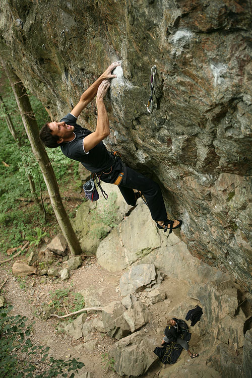
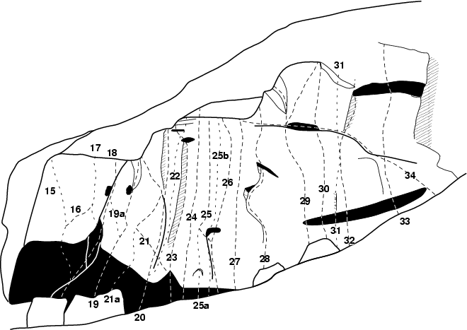
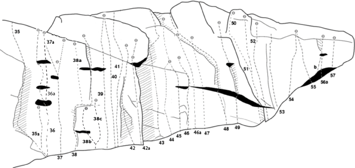

Örnberget
GPS: 59.20757,17.88241

Allmänt
Hög klippa med många långa ihållande leder på grepprik granit. Vänstra delen av Sydväggen är 45 grader brant.
Beskrivning
Berget ligger vid Tullingesjöns östra strand, ca 1,5 km promenad från Tullinge. Ett imponerande berg, med en delvis kraftigt överhängande sydvägg, 20–25 m hög. Berget betraktades länge som intressant, men första fria leden kom inte förrän 1982 med
.
Sedan dess har det tillkommit ytterligare ett femtiotal. Klippan domineras helt av svår till extremt svår klättring. Femmaklättrare göre sig icke besvär. De svåraste lederna går i fransk stil – borrbultar överallt – och är därmed välsäkrade. De äldre lederna i sexaregistret är även de ofta välsäkrade, men med traditionella medel.
Örnberget har två huvudsakliga väggar. En västvänd vägg som vetter mot sjön och i vinkel en sydvänd som följer sluttningen upp från sjön. Västväggen är sprickrik och bitvis rätt lös men det finns trots allt några fina leder på den. Sydväggen inleds med en imponerande sköld utan större formationer. Trots att marken stiger brant längs med väggen bevarar den sin höjd ett bra stycke upp i backen.
Extern förare
Förare finns på
Miljö
Väst och syd. Mestadels skuggigt förutom högra delen av sydväggen som hamnar i skugga först efter fem på eftermiddagen. Vänstra halvan av sydväggen är så överhängande att det ofta går att klättra här då det småregnar.
Nära till Tullingesjön där man gärna badar.
Vägbeskrivning
Från norr: Kör Huddingevägen, passera Tullinge station. Passera en pizzeria och ta första höger.
Följ vägen till höger ner för backen och sedan längst sjön. Klippan syns efter ett tag på höger sida och känns igen på det imponerande överhänget.
Parkera 200 m innan du kommer fram till berget och gå den sista biten, se under "Access"
Access
Det är numera förbjudet att parkera bredvid vägen alldeles vid klippan. Man kan få P-böter och det kan bli accessproblem.
Parkera i stället vid båtklubben, en grusplan som ligger bredvid vägen på vänster sida, 200 m innan man kommer fram till berget.
Leder
Norra väggen
Uppe i skogen tv om svaet finns en liten vägg.
Svaväggen (vid vägen)
- 4
- Vart tog friktionen vägen
- 7
- Småkilar. Går ihop med Svarta Änkan
Västväggen
300px
- 5a
- Tre pinnar
- 6b
- Vänster led på det röda svaet. Betydligt svårare än väntat.
- 5b
- Candyland
- 6a
- Höger led på det röda svaet. Fin led och tätt bultad.
- 6
- Nalle Puh
- 5-
- Vacker spricklinje. Jänm och fin klättring. Nyrensad och nytt toppankare -10.
- 6a
- På honungsjakt
- 5
- Klättra Nalle Puh upp till hyllan, traversera åt höger via tvärsprickan mot björken, sen klättra upp i den breda sprickan. Det kräver stora säkringar (Camalot #3 och #4). Ankare finns på toppen.

- 9a
- Verklighet
- 6c
- På aréte precis höger om Möjliga världar. Gemensamt toppankare.
- 9b
- Plattan i mattan
- 6c+
- Samma start som Verklighet, sedan diagonalt höger mot toppankare på Gasen i botten. Tydlig och logisk linje.
- 10
- Gasen i botten
- 7a+
- Rakt upp genom taket.
Sydväggen


- 14a
- The king of fucking everything
- 8c
- Vänster om Sator. Den svåraste leden på berget och kanske i hela Stockholm. Namnet kommer från grannmiljardären. Projektet bultades upp av Henrik Bolander för 15 år sedan och testades av många. Alex Megos var inbjuden av Stockholms KK som firade 40 års jubileum.
- 18
- Nattskiftet
- 7b+
- Pumpande och annorlunda klättring i den stora, överhängande diedersprickan. En variant som kan rekommenderas är Dödsskiftet, 7c, då man avslutar med utsteget på Dödligt möte i stället.
- 18a
- Dödligt möte
- 8a
- Brant första del med hårda bouldermoves, sedan vertikalt. Leden finns inte med på skissen ovan. Den börjar mellan nr 18 och nr 19 och går i en rak linje till toppen, mellan Nattskiftet och Don´t be late. Har ett eget ankare.
- 19
- Don't be late
- 7a+
- Går upp till samma ankare som Underarms UFO.
- 19a
- Don't be late direkt
- 7b
- På slutet går man in i Nattskiftet och upp till detta ankare. En kul variant är att klättra rakt upp och utsteget till Dödligt möte, då kallas leden Don´t be dead, 7b+.
- 21
- Underarms UFO
- 6c
- Enkelt att klättra onsight.
- 21b
- Långa ärmar
- 6c/6c+
- Förlangning på Underarms UFO/Lätta. Förlangningen är betydligt lättare men helt logisk fortsättning förbi gamla toppankaret upp mot en hylla och vidare på areten övanfor.
- 25
- Panta Rei
- 7a
- Uppvärmningsklassiker
- 25b
- Tredje gången gillt
- 7b
-
- 26
- Orup
- 7a+
- 9 bultar totalt inkl de 4 på Panta Rei originalinsteg
- 27
- Vinna eller försvinna
- 7c
-
- 27a
- Vinna eller försvinna direkt
- 7a+
-
- 29a
- Utan tvekan alt utsteg
- 7c+
-
- 31
- Tipp topp
- 7b+
- En friend behövs på mitten i den tydliga sprickan
Lidingöväggen

- 35a
- Antons bultstege
- 6b
- Vänster om Blötkaken.
- 36
- Blötkaken
- 6b+/6c
- Leden är nu bultad. Ankare -09
- 36a
- Blötkaken, variant på
- 6b+/6c
- Så kan man undvika den första och storsta hyllan. Graden ändras ej. Året var 1983. Hur klättrades det? Helbultad -2011.
- 37a
- Nubben på snöret
- 6c+
- Samma start som Möjlig omöjlighet. Nytt lätt utsteg åt vänster.
- 38
- Istället för Lidingöloppet
- 6+/7-
- En klassisk led och en av de finaste spricklinjerna i södra Stockholm. Rensades och försågs med ett firningsankare i oktober 2011.
- 38a
- Loppbiten
- 7b
- Tidigare en mixled, numera helbultad och rensad. Börjar på hyllan, för att nå dit - klättra En tyst minut.
- 38b
- En tyst minut
- 6b+
- Kort och boulderaktig led med lätt överhängande slut. Låt karbinerna sitta kvar i ankaret!
- 38c
- Radikalen
- 6c
- Delar första bulten med föregående led. Ursprungligen en instegsvariant till Istället för Lidingöloppet, numera en självständig led. I oktober 2011 bultades leden om och försågs med ett eget ankare t h uppe på hyllan.
- 39
- Cowboys on acid
- 7c
- En riktig testpiece. Kräver god teknik och starka fingrar.
- 46a
- No more gorillas
- 6c/6c+
- På vägg emellan Grands gorillas och Namo. Nytt toppankare.
- 49a
- Okänd
- ?
- Gobiten sedan utsteg åt vänster.
- 49b
- Go' biten
- 7b+
- Omväxlande klättring först genom ett tak och sedan i en känslig dieder. Utsteg åt höger.
-
- Frisco kid direkt
- 8a+
- Starta med Gobiten. Hangla höger på takkanten och upp burn/Frisco Kid
- 50
- Frisco kid
- 8a
- Klättra diagonalt vänster mot areten, följ sedan areten till toppen. Gemensam start med Burn.
- 51
- Burn
- 7c(+?)
- Startar som Frisco Kid men går in till höger på väggen efter tredje bulten.
- 56b
- alt. vänster-insteg till Gambit
- ?
-
Kategori:Överhäng
Kategori:Vertikalt
Kategori:Sva
Kategori:Sport
Kategori:Trad
Kategori:Mix
Kategori:Stockholm
Kategori:Västra Södertörn
Kategori:Saknar kolumner
Kategori:Saknar skrivarformatering
Copyright (C) Permission is granted to copy, distribute and/or modify this document under the terms of the GNU Free Documentation License, Version 1.3